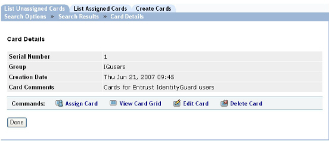

|
IdentityGuard Server 11.0 Administration Guide |
|
IdentityGuard Server 11.0 Administration Guide |
Complete one of the following procedures to delete unassigned grid cards.
● To delete an unassigned grid card
● To delete multiple unassigned grid cards using bulk operations
To delete an unassigned grid card
1. Log in to the Administration interface (see Logging in and out of the Administration interface).
2. Click Cards on the menu bar.
3. Search for the grid cards to delete. See Finding unassigned grid card information.
4. On the Search Results page, click the serial number of the grid card you want to delete.
The Card Details page appears.

5. Click Delete Card.
6. When prompted, click OK to confirm the deletion of the selected grid card.
A success message appears.
To delete multiple unassigned grid cards using bulk operations
1. Create a bulk file (see Creating and editing bulk files).
2. Log in to the Administration interface (see Logging in and out of the Administration interface).
3. On the main menu, click Bulk Operations.
The Bulk Operations page appears.
4. Click the Bulk Operation tab.
5. Click the Browse button to locate the bulk file.
6. In the Operation to Perform drop-down list, select Delete unassigned cards.
7. From the Halt Processing drop-down list, select the number of errors to allow before processing stops due to too many errors.
For more information about bulk file options, see Performing bulk operations in the Administration interface.
8. Click Perform Bulk Operation.
The Bulk Operation in Progress page appears. The size of your bulk operation directly affects the time the operation takes to process. This page indicates the initial status of the operation.
9. Optional. While Entrust IdentityGuard processes the bulk file, you can do the following:
● To view the current status of the bulk operation, click Update Results. (The Results page is also updated automatically every 10 seconds.)
● To cancel the bulk operation, click Cancel Operation.
Note: If you cancel a bulk operation, Entrust IdentityGuard keeps all changes it made while it processed the bulk file. You cannot undo a bulk operation. See Limitations of bulk operations for more information.
When Entrust IdentityGuard completes the bulk operation, the Results page appears.
10. Click Done.